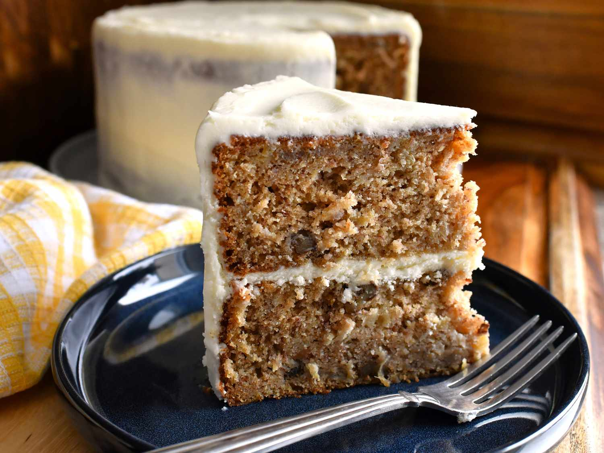

Humming Bird Cake
Home

Description
This homemade hummingbird cake is bursting with pineapple and banana flavor with crunchy nuts throughout. Cover the cake with a sweet cream cheese frosting for a fantastic dessert that's sure to impress!
Ingredients
- 3 cups all-purpose flour
- 2 cups white sugar
- 1 teaspoon baking soda
- 1 teaspoon salt
- 2 cups mashed bananas
- 1 ½ cups canola oi
- 1 cup chopped pecans or walnuts
- 1 (8 ounce) can crushed pineapple
- 3 large eggs
Frosting Ingredients
- 1 (8 ounce) package cream cheese, softened
- ½ cup butter, softened
- 4 cups confectioners' sugar
- 1 teaspoon vanilla extract
Steps
- Gather all ingredients. Preheat the oven to 350 degrees F (175 degrees C). Grease and flour two 9-inch cake pans.
- To make the cake: Sift flour, sugar, baking soda, and salt together in a large bowl. Combine bananas, oil, walnuts, pineapple, and eggs in another large bowl; mix well.
- Stir flour mixture into banana mixture until combined. Pour batter into the prepared pans.
- Bake in the preheated oven until a toothpick inserted into the center of each pan comes out clean, about 1 hour. Allow cakes to cool on wire racks.
- Meanwhile, make the frosting: Beat confectioners' sugar, cream cheese, butter, and vanilla together in a medium bowl until smooth.
- Place one cooled cake on a serving plate or cake stand. Spread some of the cream cheese frosting on top of cake; place second cake on top and spread remaining frosting evenly over the surface and sides of the cake.